|
|
|
|
|

|
|
|
|
|
 |
|
Juegos Principales
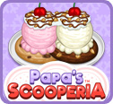
Papa's Scooperia
¡Tu viaje turístico a la gran ciudad se detiene cuando pierdes todo tu dinero y pertenencias! Atrapado en Oniontown sin dinero para regresar a casa, Papa Louie tiene una solución única a su problema: ¡Quédese y administre su nueva heladería!
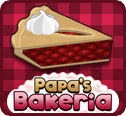
Papa's Bakeria
¡¡¡Estás contratado!!! ¿Pero puedes manejar la gestión de una gran panadería que sirva las tartas más buscadas de la ciudad? Centrada en Whiskview Mall, Papa's Bakeria recibe una buena cantidad de tráfico peatonal de algunos de los clientes más exigentes de la zona. ¡Tendrás la tarea de elegir la corteza correcta, rellenarla con una variedad de ingredientes silvestres y hornearla a la perfección!
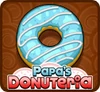
Papa's Donuteria
Acabas de conseguir un trabajo en Papa's Donuteria en la caprichosa ciudad de Powder Point. Claro, el gran salario y los beneficios son buenos, pero aceptaste el trabajo por ese codiciado pase Line-Jump. Recorta las donas, fríelas y decóralas con una vertiginosa variedad de aderezos.
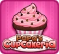
Papa's Cupcakeria
¡Cocina una cantidad ridícula de deliciosos cupcakes para todos tus locos clientes en Papa's Cupcakeria!
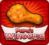
Papa's Wingeria
¡Bienvenido a Papa's Wingeria, el último restaurante en los juegos de cocina de Papa's! Tome pedidos, haga funcionar las freidoras, sazone las alitas y colóquelas en una fuente con guarniciones.
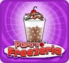
Papa's Freezeria
Acabas de conseguir un increíble trabajo de verano en la isla tropical de Calypso. Papa's Freezeria es una heladería frente al mar. Barcos llenos de clientes llegan a la isla en busca de las mejores delicias congeladoras que existen.
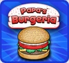
Papa's Burgeria
Papa's Burgeria prepara cualquier hamburguesa deliciosa o hamburguesa con queso a pedido. En esta frenética secuela de Papa's Pizzeria, juegas como Marty o Rita, cocinando, construyendo y sirviendo las hamburguesas más locas de la ciudad.
|
|
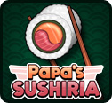
Papa's Sushiria
Tu día empeora cuando rompes la estatua del gato afortunado de Papa Louie. Todo lo que sabemos es que Papa Louie se fue en una misión descabellada y ahora estás atrapado dirigiendo el restaurante. ¿Podrás cambiar tu suerte y dominar el fino arte de hacer sushi?
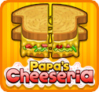
Papa's Cheeseria
¡Elabora colosales sándwiches de queso a la parrilla y apila las papas fritas en Papa's Cheeseria!
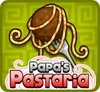
Papa's Pastaria
¡Es una boda de destino en la ciudad costera de Portallini, hogar de Papa's Pastaria! ¡Estás a cargo del restaurante más nuevo de papá, donde tomarás pedidos, cocinarás fideos y agregarás salsas y aderezos para crear un plato de pasta perfecto!
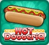
Papa's Hot Doggeria
Es el día de la inauguración en el Griller Stadium, ¡pero los abonos de temporada están todos agotados! Parece que la única forma de ver los partidos es trabajar para tu viejo amigo Papa Louie.
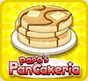
Papa's Pancakeria
Sin Papa Louie a la vista, estás atrapado dirigiendo su restaurante más nuevo. Prepárate para voltear y apilar grandes cantidades de panqueques, waffles y tostadas francesas.
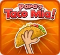
Papa's Taco Mia!
Después de ganar un concurso de comer tacos, ¡recibes las llaves de Papa's Taco Mia! Desbloquea todo tipo de ingredientes y mejora tu tienda. ¡Intenta complacer a esos quisquillosos Closers con tus salvajes habilidades para hacer tacos!
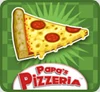
Papa's Pizzeria
Cuando Papa Louie se escapa en otra aventura, Delivery Boy Roy queda a cargo de Papa's Pizzeria. Los clientes están acostumbrados al estilo de pizzas totalmente personalizadas de Papa Louie. ¡Domina las 4 estaciones y asciende de rango para ser el mejor chef de pizza!
|
Juegos de Plataformas
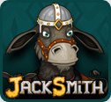
Jacksmith
Jacksmith es el burro más astuto de todo el país. Eres un herrero que fabrica una amplia gama de armas para todos tus guerreros. Elige tu mineral, elige tu molde, derrítelo, viértelo, constrúyelo y diseñalo. ¡Sigue avanzando hacia el Gran Mago Dudley!
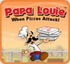
Papa Louie
¡La aventura que lo inició todo! Mientras Papa Louie organizaba una fiesta, el infame Anillo de Cebolla se infiltró en todos los pedidos. Las pizzas se transformaron en monstruos que secuestraron a todos los clientes. Armado con su paleta para pizza y bombas de pimienta, Papa Louie debe rescatar a todos.
|
|
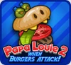
Papa Louie 2
¡La tan esperada secuela de Papa Louie: When Pizzas Attack! Radley Madish, Sarge y una legión de Burgerzillas secuestran a Papa Louie y a todos los clientes leales. Depende de Marty y Rita rescatarlos.
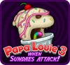
Papa Louie 3
La tercera entrega de esta popular serie de plataformas. Esta vez explorarás el lado más dulce de la Tierra de Munchmore. ¡Depende del Capitán Cori rescatar a Papa Louie del ejército de viscosos Sundaesaurus!
|
Otros Juegos de Flipline
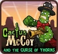
Cactus McCoy
Todo comenzó cuando Hex Hatfield contrató a McCoy para encontrar la Esmeralda Espinosa. Sin darse cuenta de la maldición, McCoy se transformó en un cactus que caminaba, hablaba y luchaba. Este juego de lucha de plataformas te hará empuñar toneladas de armas en un extraño mundo del Salvaje Oeste.

Steak and Jake
Steak y Jake tienen un trabajo: entregar la leche más fresca de este lado de Mooner Ranch. Jake el pájaro tiene un truco extra: cambiar de color, permitiéndole interactuar con objetos y enemigos de colores similares.

Rock Garden
Juega más de 100 niveles en este rompecabezas a juego de piedras, cada uno con su propio diseño, entorno y piedra coleccionable únicos. Hay dos modos disponibles: clásico y aleatorio.

Meteor Blastor
Tienes un trabajo, pero es importante... Esos meteoritos amenazan sistemas solares, eventos deportivos y naves espaciales. ¡Tienes que destruirlos y mostrarle a la galaxia por qué obtuviste el nombre de METEOR BLASTOR!
|
|
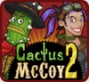
Cactus McCoy 2
¡La secuela de Cactus McCoy que estabas esperando! Un encuentro con Ella Windstorm te envía a un viaje épico de búsqueda de tesoros. ¿Podrás sobrevivir a nuevos enemigos y jefes en tu camino hacia las míticas Ruinas de Calavera?
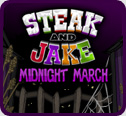
Midnight March
¡Ayuda a Steak y Jake a guiar a los Ghouls que marchan por el sendero este Halloween! Multitarea en este juego de plataformas y rompecabezas, con Jake haciendo coincidir los colores mientras despeja el camino para Steak y los Ghouls.

Guppy Guard Express
Guía al indefenso guppy a través de traicioneras cuevas submarinas, evitando rocas y escombros que caen.
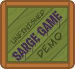
Unfinished Sarge Game Demo
¡Para celebrar OnionFest, ahora puedes jugar la demostración del prototipo inacabado del juego de Sarge! Si bien esta demostración es solo una colección de habitaciones, puedes tener una idea de cómo habría funcionado el juego.
|
Customerpalooza

Kingsley's Customerpalooza 2020
¡Customerpalooza de Kingsley regresa para 2020! Crea hasta tres entradas en la búsqueda de los mejores clientes creados por fans. ¡También puedes importar a tus amigos desde la aplicación Papa Louie Pals!

Kingsley's Customerpalooza 2018
¡Vuelve Customerpalooza de Kingsley! Crea hasta tres entradas en la búsqueda de los mejores clientes creados por fans. ¡Vuelve a votar por tus favoritas para decidir quién llega a la final!

Kingsley's Customerpalooza 2016
Kingsley's Customerpalooza está de vuelta, ¡donde TÚ decides quién se convertirá en el próximo cliente en los restaurantes de papá! Crea hasta tres entradas y vota tus favoritas.

Kingsley's Customerpalooza 2014
¡Customerpalooza de Kingsley regresa para una búsqueda mundial del mejor cliente creado por fans que nuestros ojos hayan visto jamás!
|
|

Kingsley's Customerpalooza 2019
¡Customerpalooza de Kingsley regresa para 2019! Crea hasta tres entradas en la búsqueda de los mejores clientes creados por fans. ¡También puedes importar a tus amigos desde la aplicación Papa Louie Pals!

Kingsley's Customerpalooza 2017
Kingsley's Customerpalooza está de vuelta, ahora con millones de combinaciones de colores disponibles para tus creaciones. ¡Vuelve a votar por tus favoritas para decidir quién llega a la final!

Kingsley's Customerpalooza 2015
¡Customerpalooza de Kingsley ha vuelto a lo grande! ¡Crea hasta tres entradas y vota las de otros para decidir quién llega a la final!

Kingsley's Customerpalooza 2013
¡Customerpalooza de Kingsley es una búsqueda épica y mundial del mejor cliente creado por fans que nuestros ojos hayan visto jamás!
|
|
|
|
|
|
|
|
|
|